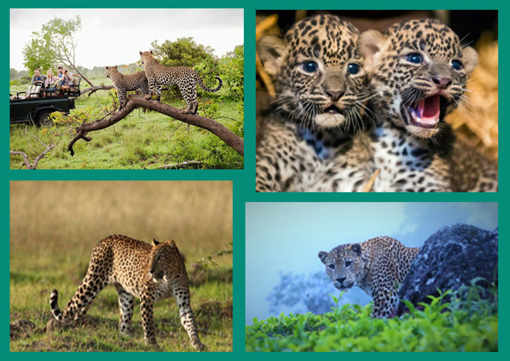

The Ceylon leopard or Sri Lanka leopard is a subspecies called Panthera pardus kotiya. Ironically, “kotiya” means “tiger” in today’s spoken Sinhala. At least, the traditional Sinhala name “kotiya” has been used for tigers in recent decades. An unequivocal Sinhala term meaning leopard is “diviya”. The Tamil name of the species is “chirutthai”. The nomenclature “kotiya” for the subspecies was introduced by the first zoologist who described the Sri Lanka leopard scientifically, P.E.P. Deraniyagala. His assumption of a distinct Sri Lankan subspecies was based on morphological differences between India’s and Ceylon’s leopards. Sriyani Mittapala’s recent analysis of the mitochondrial DNA confirmed this assumption.
The Sri Lanka leopard is one of seven or eight Asian subspecies of leopards. The genetic isolation of the Sri Lankan Leopard makes it unique. On the island of Sri Lanka, the leopard is the only representative of the genus Panthera, commonly known as “big cats”.
1. Here are descriptions of three venues where leopards are found in Sri Lanka:
1. Yala National Park: Located in the southeast coast of Sri Lanka, Yala National Park is the most famous national park in the country and has the most densely populated leopard presence on earth. Around 40 leopards are believed to roam the area, but sightings of these elusive creatures are still very rare.
2. Wilpattu National Park: Sri Lanka’s biggest national park, Wilpattu is located in the northwest lowlands and was once the most famous place for seeing leopards in the country. The area suffered badly during the civil war, and only re-opened in 2003 after being closed for 15 years .
3. Kumana National Park: Located in the southeast coast of Sri Lanka, Kumana National Park is home to a significant population of leopards. The park is also known for its birdlife, with over 200 species of birds recorded.
2. Distinctive Features:
🎨 Unique coat: A mesmerizing coat adorned with rosettes and spots, each leopard possessing a one-of-a-kind pattern.
🔍 Sleek physique: Agile and muscular, the Sri Lankan leopard boasts a streamlined body designed for stealthy maneuvers in its lush habitat.
Protecting Sri Lanka’s Leopards:
1. Poaching: Poaching is a significant threat to the Sri Lankan leopard population. Poachers hunt leopards for their skin, bones, and other body parts, which are used in traditional medicine and sold on the black market. The consequences of poaching are devastating, as it can lead to a decline in the leopard population and disrupt the delicate balance of the ecosystem. To reduce the threat of poaching, the Sri Lankan government has implemented strict laws and regulations, and organizations such as the Wildlife Conservation Society of Galle are working to raise awareness about the issue and protect the leopards .
2. Habitat loss: Habitat loss is another significant threat to the Sri Lankan leopard population. Deforestation, urbanization, and human encroachment have led to a decline in the leopard population and disrupted their natural habitat. To reduce the threat of habitat loss, organizations such as the Wildlife and Nature Protection Society of Sri Lanka are working to protect the leopards’ natural habitat and raise awareness about the issue .
